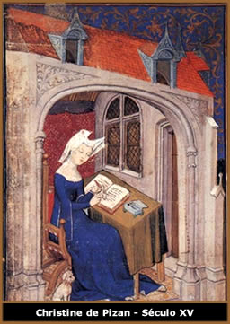

A participação e o
lugar da mulher na História foram negligenciados pelos
historiadores por muito tempo. Elas ficaram à sombra de
um mundo dominado pelo gênero masculino. Ao pensarmos o
mundo medieval e o papel desta mulher, esse quadro de exclusão
se agrava ainda mais, pois alem do silêncio que encontramos
nas fontes, os textos que muito raramente tratam o mundo feminino
estão impregnados pela aversão dos religiosos da
época por elas.
Na Idade Média, a maioria das idéias
e de conceitos eram elaborados pelos Escolásticos. Tudo
o que sabemos sobre as mulheres deste período saiu das
mãos de homens da Igreja, pessoas que deveriam viver completamente
longe delas. Muitos clérigos consideravam-nas misteriosas,
não compreendiam, por exemplo, como elas geravam a vida
e curavam doenças utilizando ervas.
A mulher para os clérigos era considerada
um ser muito próximo da carne e dos sentidos e, por isso,
uma pecadora em potencial. Afinal, todas elas descendiam de Eva,
a culpada pela queda do gênero humano. No início
da Idade Média, a principal preocupação com
as mulheres era mantê-las virgens e afastar os clérigos
desses seres demoníacos que personificaram a tentação.
Dessa forma, a maior parte das autoridades eclesiásticas
desse período via a mulher como portadora e disseminadora
do mal.
Isso as tornava má por natureza e atraída
pelo vício. A partir do século XI com a instituição
do casamento pela Igreja, a maternidade e o papel da boa esposa
passaram a serem exaltados. Criou-se uma forma de salvação
feminina a partir basicamente de três modelos femininos:
Eva (a pecadora), Maria (o modelo de perfeição e
santidade) e Maria Madalena (a pecadora arrependida). O matrimônio
vinha para saciar e controlar as pulsões femininas. No
casamento a mulher estaria restrita a um só parceiro, que
tinha a função de dominá-la, de educá-la
e de fazer com que tivesse uma vida pura e casta.
Eram
consideradas como a causa e objeto do pecado, era portadora de
entrada para o demônio. Só não eram consideradas
objetos do pecado quando eram virgens, mães ou esposas,
ou quando viviam no convento. Quando eram esposas não podiam
vender nem hipotecar seus bens sem a autoridade e consentimento
do seu marido.
As camponesas trabalhavam muito: cuidavam das crianças,
fiavam a lã, teciam e ajudavam a cultivar as terras. As
mulheres com um nível social mais alto tinham uma rotina
igualmente atribulada, pois administravam a gleba familiar quando
seus maridos estavam fora, em luta contra os vizinhos ou em cruzadas
à Terra Santa. Atendimento aos doentes, educação
às crianças também eram tarefas femininas.
Essa falta de conhecimento da natureza feminina
causava medo aos homens. Os religiosos se apoiavam no Pecado Original
de Eva para ligá-la à corporeidade e inferiorizá-la.
Isso porque, conforme o texto bíblico, Eva foi criada da
costela de Adão, sendo, por isso, dominada pelos sentidos
e os desejos da carne. Devido a essa visão, acreditava-se
que ela foi criada coma única função de procriar.
Na idéia do Pecado Original encontramos
uma outra característica criticada nas mulheres pelos clérigos,
a tagarelice. Afinal foi por um pedido de Eva que Adão
aceitou o fruto proibido, e por isso, foi considerada uma enganadora.
Maria foi à redentora de Eva, que veio ao
mundo com a missão de liberar Eva da maldição
da Queda. Desenvolveu-se então a idéia de Maria
era a mãe da humanidade, de todos os homens e mulheres
que viviam na graça de Deus, enquanto Eva era a mãe
de todos que morrem pela natureza. O culto a Maria se baseava
em quatro pilares: a maternidade divina, a virgindade, a imaculada
concepção e a assunção.
Por isso, as mulheres eram encorajadas a se manterem
castas até o casamento, se a sua opção de
vida fosse o matrimônio. Porém, a melhor forma de
seguir o exemplo de Maria era permanecer virgem e tornar-se esposa
de Cristo, com base na idéia recorrente de que Maria era
"irmã, esposa e serva do Senhor". Eva simbolizava
as mulheres reais, e Maria um ideal de santidade que deveria ser
seguido por todas as mulheres para alcançar a graça
divina, caminho para a salvação.
Mas como Maria era um ideal a ser seguido, inatingível
pelas mulheres comuns, surge à figura de Maria Madalena,
a pecadora arrependida, demonstrando que a salvação
é possível para todos que abandonam uma vida cheia
de pecados. Com essa imagem de mulher pecadora que se arrepende
e segue o mestre até o calvário, Maria Madalena
veio demonstrar que todos os pecadores são capazes de chegar
a Deus.
A partir daí foi concebido as mulheres,
assim como a pecadora o direito ao arrependimento, demonstrado
pela prostração, humilhação e lágrimas,
em oposição à tagarelice de Eva, que levou
toda a humanidade ao pecado. Por isso, a pregação
feminina deveria ser sem palavras, feita apenas pela mortificação
corporal.
Todo este antí-feminismo tinha como objetivos
básicos: afastar os clérigos das mulheres, institucionalizar
o casamento e a moral cristã, moldada através da
criação de um segundo modelo feminino a Virgem Maria.
Os três modelos difundidos por toda a Idade
Média (Eva, Maria e Madalena) deixam claro o papel civilizador
e moralizador desempenhado pela Igreja Católica ao longo
de aproximadamente mil anos de formação da sociedade
ocidental.
A própria passagem da visão de corporeidade
e danação feminina, pautada no modelo de Eva, vista
como aliada do demônio. Esse estado de maldição
foi amenizado com o culto à Virgem Maria, que trouxe consigo
a reconciliação entre a humanidade e Deus, contudo,
essa reconciliação ainda restritiva, pois somente
aqueles que vivessem na graça divina alcançariam
à salvação. Com Maria Madalena se estende
a possibilidade de salvação a todos que tinham caído
no erro, mas foram capazes de se arrepender.
Eva concentra em si todos os vícios que
trazem símbolos tidos como femininos, como a luxúria,
a gula, a sensualidade e a sexualidade. Todos esses atributos
apareciam nela como exemplo. E como forma de salvação
para a mulher, eles ofereciam a figura de Maria Madalena, a prostituta
arrependida mais conhecida e que se submeteu aos homens e a Igreja.
Fica claro assim que não é possível
analisar o que as mulheres pensam de si próprias: o que
nos foi transmitido pelas fontes são modelos ideais e regras
de comportamento que nem sempre são positivos.
Essa concepção
de mulher, que foi construída através dos séculos,
é anterior mesmo ao cristianismo. Foi assegurada por ele
e se deu porque permitiu a manutenção dos homens
no poder, fornecia uma segurança baseada na distancia ao
clero celibatário, legitimou a submissão da ordem
estabelecida pelos homens. Esta construção começou
apenas a ruir, mas os alicerces ainda estão bem fincados
na nossa sociedade.
Texto original
de Patrícia Barboza da Silva
Extraído
e adaptado de www.brasilescola.com
Download
Disponível: